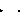

Connectors and partial models
Extends from Modelica.Icons.InterfacesPackage (Icon for packages containing interfaces).
| Name | Description |
|---|---|
| Input port of a step | |
| Output port of a step | |
| Input port of a transition | |
| Output port of a transition | |
| CompositeStep_resume | Input port of a step (used for resume connector of a CompositeStep) |
| Output port of a step (used for suspend connector of a CompositeStep) | |
| Communication port between a CompositeStep and the ordinary steps within the CompositeStep (suspend/resume are inputs) | |
| Communication port between a CompositeStep and the ordinary steps within the CompositeStep (suspend/resume are outputs) | |
|  PartialStep | Partial step with one input and one output transition port |
| Partial transition with input and output connections | |
| PartialStateGraphIcon | Icon for a StateGraph object |
| CompositeStepState | Communication channel between CompositeSteps and steps in the CompositeStep |
 Modelica.StateGraph.Interfaces.Step_in
Modelica.StateGraph.Interfaces.Step_inInput port of a step
| Name | Description |
|---|---|
| occupied | true, if step is active |
| set | true, if transition fires and step is activated |
 Modelica.StateGraph.Interfaces.Step_out
Modelica.StateGraph.Interfaces.Step_outOutput port of a step
| Name | Description |
|---|---|
| available | true, if step is active |
| reset | true, if transition fires and step is deactivated |
 Modelica.StateGraph.Interfaces.Transition_in
Modelica.StateGraph.Interfaces.Transition_inInput port of a transition
| Name | Description |
|---|---|
| available | true, if step connected to the transition input is active |
| reset | true, if transition fires and the step connected to the transition input is deactivated |
 Modelica.StateGraph.Interfaces.Transition_out
Modelica.StateGraph.Interfaces.Transition_outOutput port of a transition
| Name | Description |
|---|---|
| occupied | true, if step connected to the transition output is active |
| set | true, if transition fires and step connected to the transition output becomes active |
 Modelica.StateGraph.Interfaces.CompositeStep_resume
Modelica.StateGraph.Interfaces.CompositeStep_resumeInput port of a step (used for resume connector of a CompositeStep)
| Name | Description |
|---|---|
| occupied | true, if step is active |
| set | true, if transition fires and step is activated |
 Modelica.StateGraph.Interfaces.CompositeStep_suspend
Modelica.StateGraph.Interfaces.CompositeStep_suspendOutput port of a step (used for suspend connector of a CompositeStep)
| Name | Description |
|---|---|
| available | true, if step is active |
| reset | true, if transition fires and step is deactivated |
Communication port between a CompositeStep and the ordinary steps within the CompositeStep (suspend/resume are inputs)
| Name | Description |
|---|---|
| suspend | = true, if suspend transition of CompositeStep fires |
| resume | = true, if resume transition of CompositeStep fires |
| activeStepsDummy | Dummy variable in order that connector fulfills restriction of connector |
| activeSteps | Number of active steps in the CompositeStep |
Communication port between a CompositeStep and the ordinary steps within the CompositeStep (suspend/resume are outputs)
| Name | Description |
|---|---|
| suspend | = true, if suspend transition of CompositeStep fires |
| resume | = true, if resume transition of CompositeStep fires |
| activeStepsDummy | Dummy variable in order that connector fulfills restriction of connector |
| activeSteps | Number of active steps in the CompositeStep |
Partial step with one input and one output transition port
| Name | Description |
|---|---|
| nIn | Number of input connections |
| nOut | Number of output connections |
| Name | Description |
|---|---|
| inPort[nIn] | Vector of step input connectors |
| outPort[nOut] | Vector of step output connectors |
Partial transition with input and output connections
| Name | Description |
|---|---|
| Timer | |
| enableTimer | = true, if timer is enabled |
| waitTime | Wait time before transition fires [s] |
| Name | Description |
|---|---|
| inPort | Vector of transition input connectors |
| outPort | Vector of transition output connectors |
 Modelica.StateGraph.Interfaces.PartialStateGraphIcon
Modelica.StateGraph.Interfaces.PartialStateGraphIconIcon for a StateGraph object
Communication channel between CompositeSteps and steps in the CompositeStep
| Name | Description |
|---|---|
| subgraphStatePort |